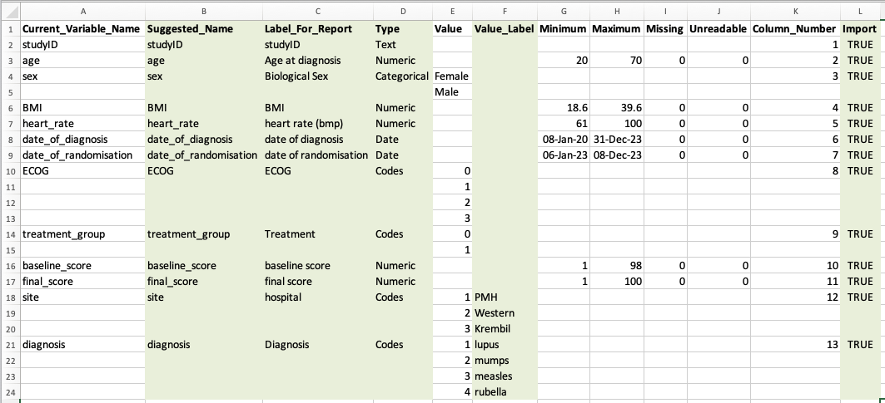

3.1 Editing the Dictionary Sheet
Running the macro creates a dictionary sheet that summarises all the variables in the data.
The columns highlighted in green can be edited to change the final data frame created by the importExcel package.
For example:
- To omit a column set the value to FALSE in the Import columns.
- To recode variables set values in the Value_Label column. Note that if you set value labels for a column, any values without labels will be set to
NA. - To change the label that appears in the report edit the Label_For_Report column
- To change the variable name edit the Suggested_Name

Caution: If you change the names of the column headers in the dictionary you will not be able to use the importExcel package to import and code the data.
You can add additional columns for your own recode keeping, these will just be ignored on import.